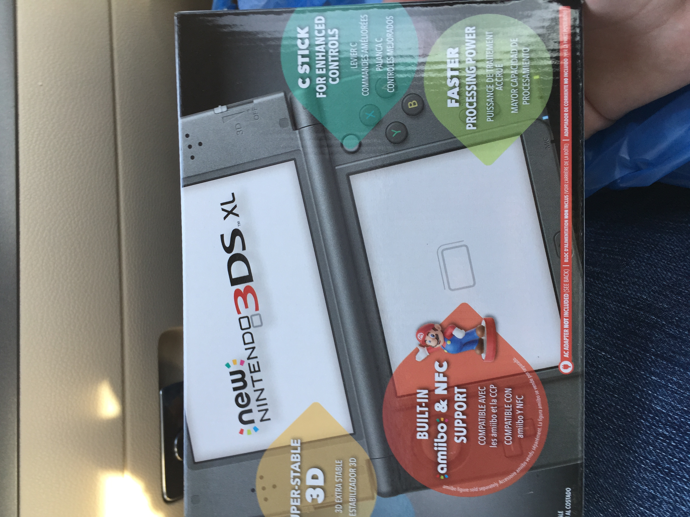
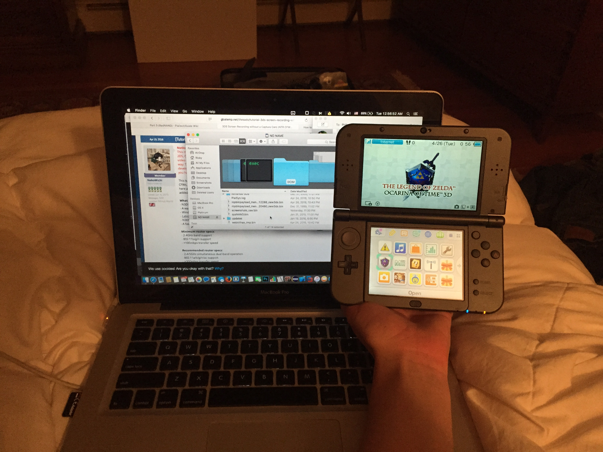

Through some nontrivial sequence of events this past weekend I found myself purchasing the following:

Yep, a brand "new" New Nintendo 3DS XL. Now, let me for the record say that it way bigger than anything I'd like. The screen does look nice, but I mean it literally doesn't fit in my pocket.
I got this thing about a year after it came out. I had been trying to get the Majora's Mask 3DS XL when that first came out, but I've long since given up on that dream. Anyway, my desire to own this N3DS XL is strictly business.
I'm considering ordering a Japanese New 3ds non-XL online, just because they're smaller. Only time can tell.

Here's how big it compared to my laptop. Jeez. Here's a link to the last time I blogged about getting a Nintendo DS system. Hard to believe even THAT was a long time ago.
It stil feels like the Nintendo DSes in general are new compared to the gameboy, but I guess they've been out more than 10 years old at this point...